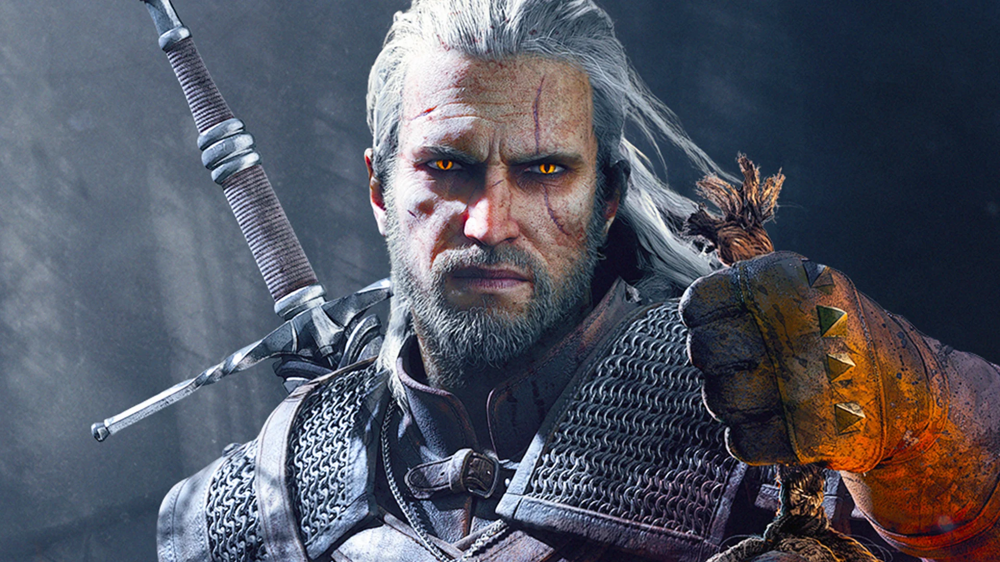

안제이 사프콥스키의 판타지 소설 더 위쳐 시리즈의 완결 이후[5] 게롤트의 여정을 다룬 3부작 게임 시리즈의 완결편이다. 흥행과 비평에서 대성공하였으며, 2015년에 다수의 GOTY 상을 수상하였다.
공식적(스팀 기준)으로는 최소 6GB 이상의 램, 인텔 코어 i5 2500k 이상의 CPU, 지포스 GTX 660 또는 라데온 HD 7870 이상의 GPU를 필요로 한다. 하지만 최적화가 잘 된 편이라 최소사양을 밑도는 사양으로도 플레이가 가능하다. 게임 발매 후 시간이 지난 뒤 플레이어들에 의하면 FHD 해상도 기준 AMD Ryzen 2600, 지포스 GTX 1060 3GB 정도의 사양을 가진 유저는 상급 옵션으로 평균 60 프레임 수준의 원활한 게임 진행이 가능하다고 한다. 그 이하의 사양을 가진 유저라도 엔비디아 헤어웍스 옵션을 끈다면 30 프레임 타협이 용이하다고 한다. 연식이 된 컴퓨터를 사용한다면 사양 정리표를 참고하면 좋다.